Session starten
Spielerprofile antippen. Ergebnisse und Siege laufen über mehrere Games weiter.
DARTS, ABER ARCADE.
Smart Dartboard legt digitale Spielwelten exakt über ein echtes Board. Wählen, werfen, jubeln – mit Projektor, Touch-Controller, Sound und Spielmodi, die sich jedes Mal anders anfühlen.
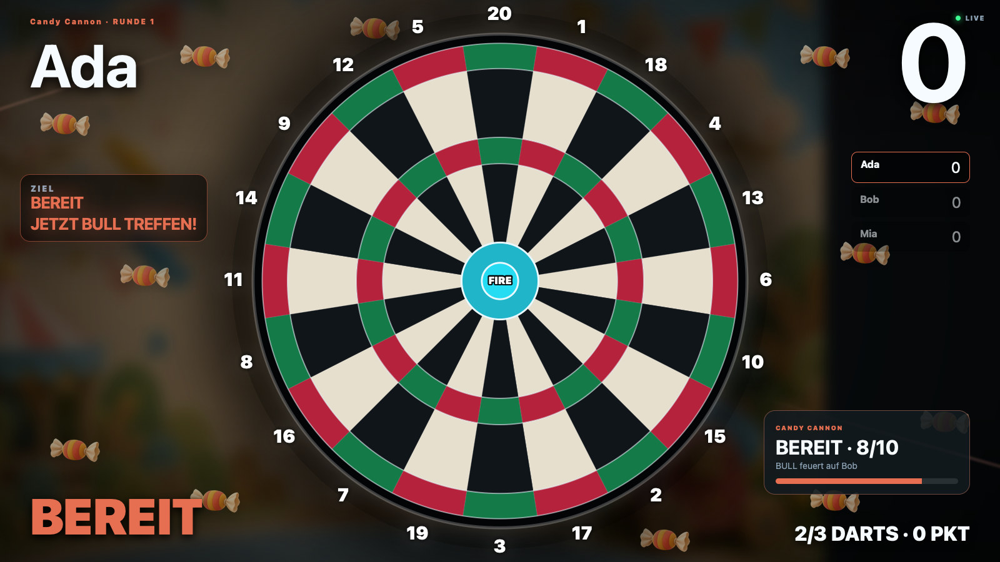
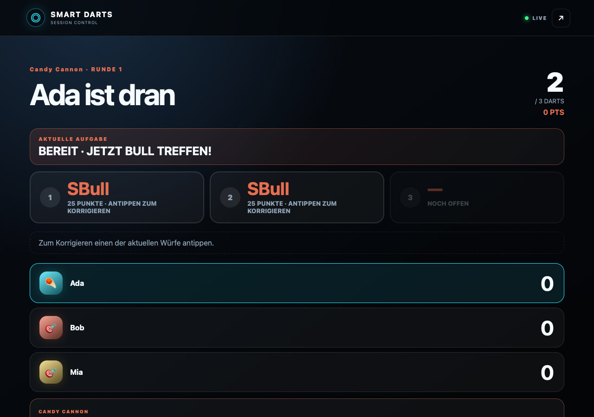
VON NULL AUF SPIELBETRIEB
Die Bedienung bleibt auf dem Controller. Der Projektor gehört vollständig dem Spiel.
Spielerprofile antippen. Ergebnisse und Siege laufen über mehrere Games weiter.
Große Artworks, kurze Regeln und passende Optionen – ohne verschachtelte Menüs.
Board-Overlays zeigen Ziele und Gefahren. Sound bestätigt Treffer, Wechsel und Sieg.
PIXELGENAU
Vierpunkt-Kalibrierung, runder Reset und eine dauerhaft mittige Board-Geometrie halten digitale Ziele dort, wo der Dart landet.
HÖRBAR DIREKT
Treffer, Miss, Countdown, Spielerwechsel und Sieg bekommen klare akustische Signale über den Projektor.
SESSION READY
Gewonnene Games geben Sessionpunkte. Dauerhafte Profile sammeln Statistiken über den Abend hinaus.
ECHTES GAMEPLAY
Alle Aufnahmen stammen automatisiert aus einer lokalen WebKit-Testsession.
24 MODI. EINE SCHEIBE.
Klassiker, Party-Games, Koop-Abenteuer und Arcade-Experimente teilen sich dieselbe präzise Trefferlogik.
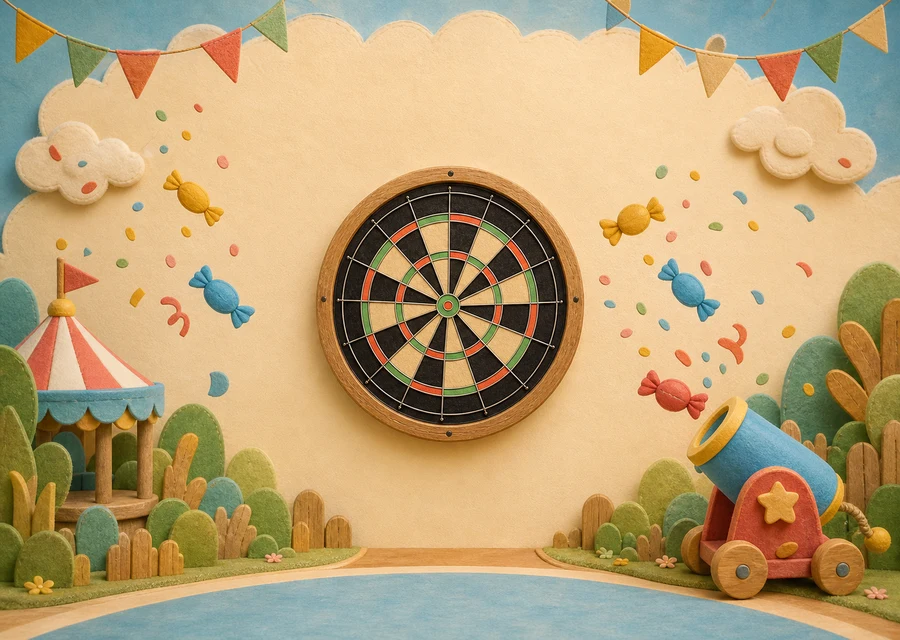
Aufladen, nicht überhitzen und mit Bull feuern.
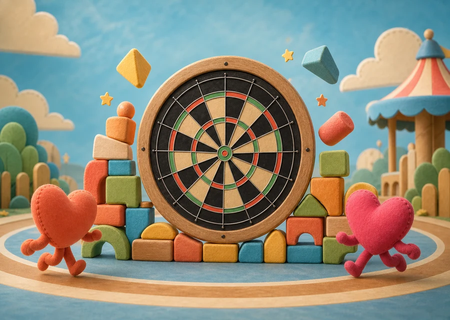
Bewegen, drehen und gemeinsam Linien bauen.
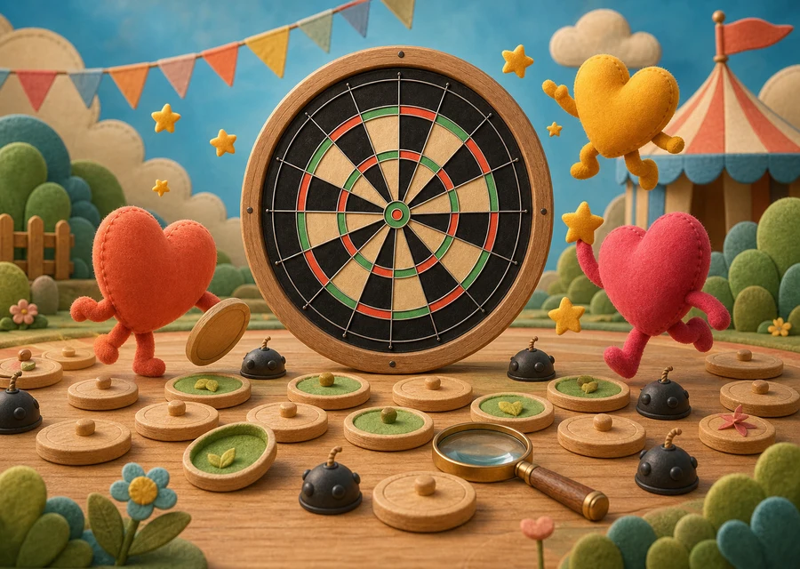
Felder aufdecken und Minen logisch umspielen.
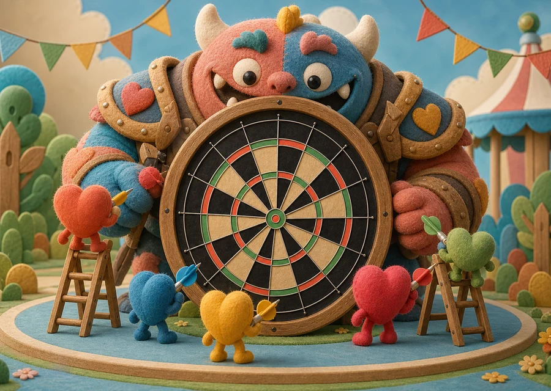
Schwachpunkte finden und gemeinsam Schaden machen.
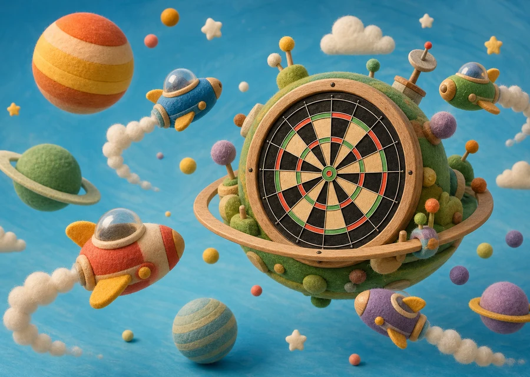
Wellen stoppen, bevor die Flotte zu groß wird.
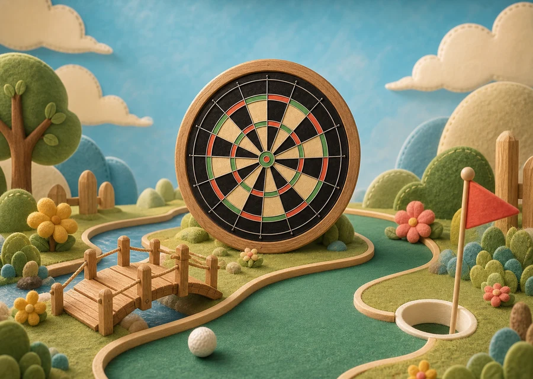
Ein gemeinsamer Kurs, möglichst wenige Darts.
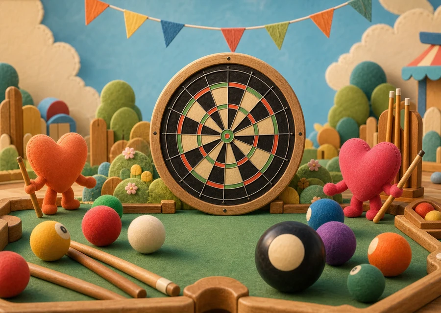
Eigene Zahlen räumen, dann Double Bull versenken.
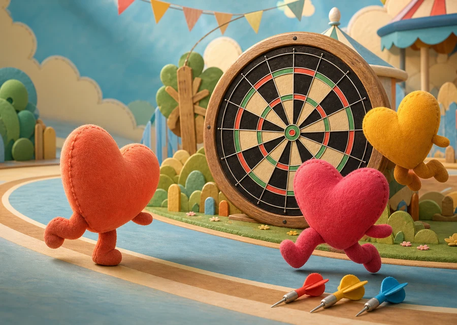
Herausforderungen schlagen und Herzen jagen.
ZWEI ARTWORK-PACKS
Wechsle im Board-Setup zwischen warmer 3D-Spielzeugwelt und klassischer Neon-Arcade.
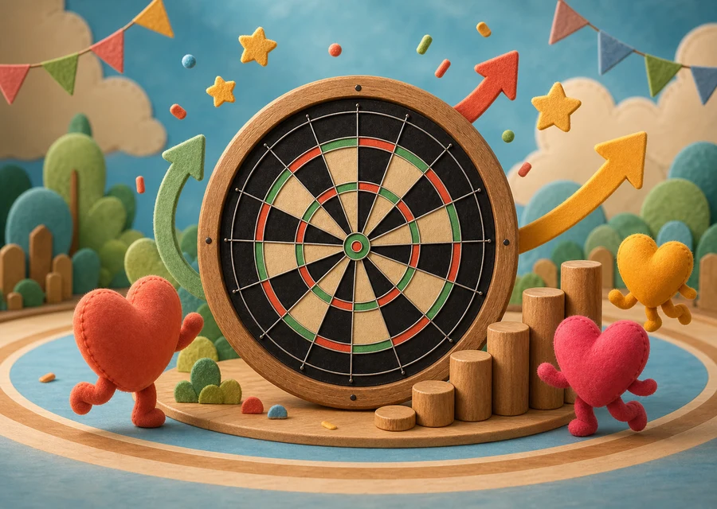
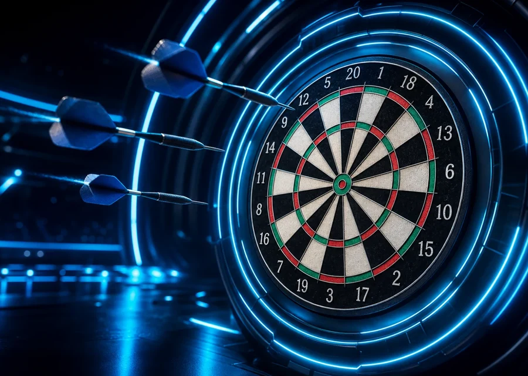
ECHTE HARDWARE, KLARE ROLLEN
Die Scheibe liefert Treffer, der Controller führt durch den Abend, der Projektor macht jeden Wurf sichtbar und hörbar.
FÜR NEUE IDEEN GEBAUT
Jeder Modus bringt Regeln, Optionen, Anleitungen und Board-Overlays mit. Der gemeinsame Core kümmert sich um BLE, Sessions, Undo, Screens und Persistenz.
Architektur auf GitHub ansehen ↗class ArcadeMode:
metadata = GameMetadata(
title="New Mode",
options=[...],
instructions=[...],
)
def apply_throw(...):
return outcome
def get_overlay(...):
return targetsREADY TO THROW?
Der aktuelle Stand, Setup-Anleitung und der komplette Code liegen auf GitHub.
Smart Dartboard auf GitHub ↗